- Overview
- Edit the Email Server Configurations
- Email Server Configuration Options
- Testing the Email Configuration
- Settings of Common Email Providers with the Engine SMTP (PHPMailer)
- Email Configuration for Gmail
- Email Configuration for Gmail using SMTP Relay
- Email Configuration for Yahoo!
- Email Configuration for Hotmail
- Email Configuration for Outlook
- Checking the Email Configuration
- Sending Emails from Different Server and User Accounts
Overview
ProcessMaker can be configured to send out emails to keep its users updated about new cases in their inbox and receive notifications at specific times while running cases. This page explains the settings to be used to configure the email servers within ProcessMaker.
It is possible for the user to configure the email servers in order to use the following components:
- Tasks: Automatically sends an email to a user when they are assigned to a task in a case.
- Events: Sends Message Events to users at a particular time during the course of a case.
- Trigger code: Trigger code with the PMFSendMessage() function.
- Case Notes: Sends emails containing the case notes to all users who participate in the case.
Note: The email settings have been tested with Gmail, Yahoo, Hotmail and Microsoft Office 365 services.
Edit the Email Server Configurations
Allow ProcessMaker to send out email notifications by logging on to ProcessMaker with a user such as "admin", who has the PM_SETUP permission in their role.
Note: Users must have the PM_SETUP_EMAIL permission assigned to their role to access the ADMIN > Settings > Email Servers option.
To edit the Email Server configuration, follow these steps:
-
Go to ADMIN > Settings > Email Servers.

-
Select the only item listed on the screen. This item represents an email server that is not configured yet and it is called MAIL.
-
Click on the Edit button to change the configuration of this email server.
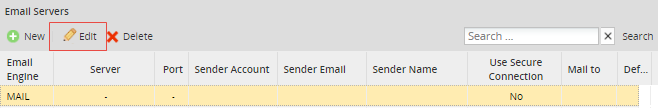 -
A new window Edit Email Server displays, where the following Email Engine options are presented:
Email Server Configuration Options
In the Edit Email Server window, the Email Engine field must first be defined. In this dropdown select either:
- SMTP (PHPMailer): This option sends email using the PHPMailer program. Select this option to use an email server that supports the Simple Mail Transport Protocol (SMTP). If your organization does not have its own email server (such as sendmail, postfix, or exim), use an external email service (such as Gmail, Yahoo or Hotmail) that supports SMTP. If using an external email service, read the configuration information below for Hotmail, Yahoo or Gmail, or see this list for the SMTP configuration of other email providers.
- SMTP - IMAP (PHPMailer): This option stores email messages in a mail server, but allows the end user to view and handle the messages as though they were stored locally in the end user's computing device(s). Available Version: As of ProcessMaker 3.4.0.
- Mail (PHP): Select this option to use PHP's mail() function to send emails via the Mail Transfer Agent (MTA), such as SendMail, Postfix or Exim, which is installed and configured on the same server where ProcessMaker is installed. Make sure that the php.ini file in the server is configured to use the MTA. If unable to deliver mail, check the sendmail_path setting. If using a Windows server, it may be necessary to change the SMTP and stmp_port settings.
- GMAIL API SMTP - IMAP: Select this option to send emails using a Gmail account and if Less secure app access option is disabled in this Google account. ProcessMaker provides connection with given access tokens by Google rather than credentials, which provide security when setting personal data.
- OFFICE 365 API SMTP - IMAP: Select this option to send emails using an Office account that provides Azure. For this purpose, Azure requires to register and authenticate a new application in Microsoft Azure Portal.
SMTP (PHP Mailer)
This section discusses how to configure the SMTP (PHPMailer) option, as accessed from Email Engine setting of the Edit Email Server window.
If this option is selected in the Email Engine option, the following fields must be filled in:

Where:
- Server: The IP address or domain name for the email server. For example, "smtp.gmail.com", "smtp.mail.yahoo.com" or "smtp.example.com".
- Port (default 25): The port number used by the email server. Generally port 25 is used, or alternatively port 587. If connecting to the email server with a SSL or TLS connection, generally port 465 is used. If left blank, the default port 25 will be used. (See also the corresponding settings by email provider.)
Note: Make sure that a firewall is not blocking this port on your ProcessMaker server.
- Require Authentication: Check this option to enable authentication. When checked, it displays the Password field.
- Password: The password for the user account.
- Sender Account: The name of the user account from which emails are sent from. Some email servers, such as Gmail, require that the account name includes the full email address, such as: johndoe@gmail.com.
- Sender Email: Email account from which the email notifications will be sent to. Otherwise as of ProcessMaker 3.3.0, if Sender Email is empty, the Sender Account replaces it.
- Sender Name: Set the name of the email address from which emails are sent from, such as "My Company Admin". If left blank the emails are sent from "ProcessMaker" by default. When the flow of a process reaches an Intermediate Email event and the Sender Name is left blank, the Sender Name displays the value of the Sender Account field by default.
- Use Secure Connection: Select whether the email requires a secure connection:
- No: No secure connection to the email server required.
- TLS: Select to use Transport Layer Security to connect to the email server.
- SSL: Select to use Secure Sockets Layer to connect to the email server.
Note: It is strongly recommended to establish secure connections with email servers using SSL or TLS security certificates by enabling one of the two previous options.
Send a test mail: Check this option to send a test mail. When checked, it displays the Mail to field.
- Mail to: Email account to which the test mail will be sent to.
- Set as default configuration: If checked, this will set this email configuration as default from now on.
Note: To use Office 365 that usually requires more time to connect than other message services, as of ProcessMaker 3.3.0 an IT manager can define the SMTP server timeout when sending emails. To do this, configure the smtp_timeout parameter in the env.ini file.
SMTP - IMAP (PHPMailer)
The SMTP - IMAP (PHPMailer) engine adds two fields to set up the incoming email server and port.
Follow these steps to configure SMTP - IMAP engine:
-
Log in to ProcessMaker as an administrator or a user with the PM_SETUP_EMAIL permission in their role.
-
Go to ADMIN > Settings > Email Servers.
-
The Email Servers screen displays. In the top bar, click the New button. The New Email Server screen displays.
-
In the Email Engine field, select SMTP - IMAP (PHPMailer). The SMTP-IMAP options display below the Email Engine field.
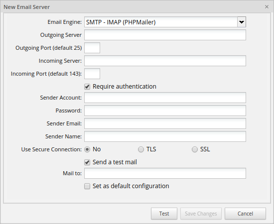
-
In the Outgoing Server field, enter the IP address or domain name for the email server that will send to the notifications. For example, "smtp.gmail.com" or "smtp.example.com".
-
In the Outgoing Port (default 25) field, enter the SMTP port number used by the email server. Generally, it is port 25, or alternatively port 587. If the connection to the email server use SSL or TLS, generally port 465 is used. If this field is empty, the default port to use is 25.
-
In the Incoming Server field, enter the IP address or domain name of the email server that will be used to read the notifications. The incoming server is used to connect with the IMAP protocol to read the emails that are received in the account. This field is required. For example, "imap.gmail.com".
-
In the Incoming Port (default 143), enter the IMAP port number used by the incoming server, the default is 143. However, since most email servers connect through SSL, it is recommended to use 993.
-
In the Require authentication checkbox, check this option to enable authentication. After checking this option, the Password field displays.
-
In the Sender Account field, enter the name of the user account from where emails are to be sent from. Some email servers, such as Gmail, require that the account name include the full email address, such as: “johndoe@gmail.com”.
-
In the Password field, enter the password for the user account.
-
In the Sender Email field, enter the email account from where the email notifications are to be sent from.
-
In the Sender Name field, set the name of the email address from where emails are to be sent from, such as "My Company Admin". If left blank, then emails will be sent from "ProcessMaker" by default. When the flow of a process reaches an intermediate email event and the Sender Name is blank, the Sender Name in the email displays the value of the Sender Account field by default.
-
In the Use Secure Connection field, select whether the email requires a secure connection:
- No: No secure connection to the email server required.
- TLS: Use a Transport Layer Security to connect to the email server.
- SSL: Use a Secure Sockets Layer to connect to the email server.
-
In the Send a test mail checkbox, check this option to send a test mail. After checking this option, the Mail to field displays.
-
In the Mail to field, enter the email account to where the test mail will be sent from.
-
In the Set as default configuration checkbox, check this option to set this email configuration as default from now on.
-
Click Test.
-
Click Save Changes.
Note: It is strongly recommended to establish secure connections with email servers using SSL or TLS security certificates by enabling one of the two previous options.
Mail (PHP)
This section discusses how to configure the Mail (PHP) option, as accessed from Email Engine setting of the Edit Email Server window.
If using this option, no configuration information needs to be entered.

- Sender Email: The email account from which the email notifications is sent to. Otherwise as of ProcessMaker 3.3.0, if Sender Email is empty, the "Mail (PHP)" label replaces it.
- Sender Name: Set the name of the email address from which emails are sent from, such as "My Company Admin". If left blank, then emails will be sent from "ProcessMaker" by default. When the flow of a process reaches an Intermediate Email event and the Sender Name is left blank, the Sender Name displays the value of the Sender Account field by default.
Send a test mail: Check this option to send a test mail. When checked, it displays the Mail to field.
- Mail to: Email account to which the test mail will be sent to.
GMAIL API SMTP - IMAP
Available Version: ProcessMaker 3.4.7 - 3.7.6 used to call GMAIL API (PHP Mailer). As of ProcessMaker 3.7.7, the GMAIL API email server now supports SMTP and IMAP services.
This section discusses how to configure the GMAIL API SMTP-IMAP option, as accessed from Email Engine setting of the Edit Email Server window.
-
If this option is selected in the Email Engine option, the following fields must be filled in:

- Server API: The IP address or domain name for the email server. Gmail uses by default smtp.gmail.com.
- Port: The port number used by the email server. Gmail uses by default port 587. If connecting to the email server with a SSL or TLS connection, generally port 465 is used.
Note: Make sure that a firewall is not blocking this port on your ProcessMaker server.
-
Client ID, Client Secret: Tokens provided by Google. To generate this tokens, check how to obtain an access from the Google Authorization Server.
- From Account: The name of the user account from which emails are sent from. It is required that the account name includes the full email address, such as: johndoe@gmail.com.
- Sender Email: Email account from which the email notifications will be sent to. Otherwise as of ProcessMaker 3.3.0, if Sender Email is empty, the From Account replaces it.
- Sender Name: Set the name of the email address from which emails are sent from, such as "My Company Admin". If left blank the emails will be sent from "ProcessMaker" by default. When the flow of a process reaches an Intermediate Email event and the Sender Name is left blank, the Sender Name displays the value of the Sender Account field by default.
- Send a test email: Check this option to send a test mail. When checked, it displays the Mail to field.
- Mail to: Email account to which the test mail will be sent to.
- Set as default configuration: If checked, this will set this email configuration as default from now on.
-
After filling in the email settings, click on the Continue button to validate the email configuration.
-
You will be redirected to Google Account Validation. Select your Gmail account to proceed.
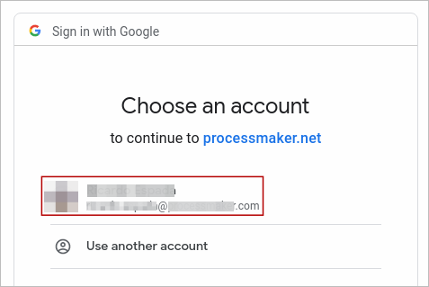 -
Click the Allow button to confirm access.

-
The Gmail account is now set up properly.
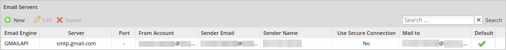
Restrictions
To avoid errors when setting GMAIL API Engine, these cases should be considered:
-
When the Client ID has incorrect values, Google Account page reports the 401 error: The OAuth client was not found. This happens when editing or setting a new server.

- When the From Account field is edited with a value that does not belong to the Client Secret field (even if email does not exist), no error is displayed and emails saved with this configuration are not sent.
-
If the Authorized domain value is not set up correctly on the Google Console, it reports a 400 error: The redirect URI does not match the ones authorized for the OAuth client.
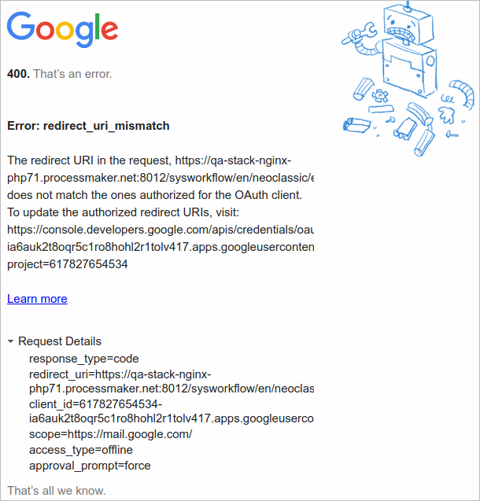
OFFICE 365 API SMTP-IMAP
Available Version: ProcessMaker 3.7.0 - 3.7.6 used to call OFFICE 365 API (PHP Mailer). As of ProcessMaker 3.7.7, the Office 365 API email server now supports SMTP and IMAP services.
This section documents email configuration settings for Microsoft Office 365.
Microsoft Office 365 has strict restrictions when setting up servers. Take into account the following remarks to set up an email server with an Office account successfully.
- Enter the From Account setting in the servers using a valid email address.
- Enter the same email address in both the user and the email Server settings.
- Authenticate the same email address in the Email Servers settings.
Register a new application in Microsoft Azure Portal
In order to set up the configuration for Microsoft Office 365, register a new application in Azure portal following these steps:
Open a browser and navigate to the Azure Active Directory admin center (https://aad.portal.azure.com/). Next, log on using a personal account (Microsoft Account), Work or School account.
Select New registration in the App registrations menu.
Register the Redirect URI that ProcessMaker uses in Microsoft Azure Portal: https://{host}/sysworkflow/en/neoclassic/emailServer/emailServerOffice365OAuth.
Get a Client ID from Microsoft Azure Portal.
Get a Client Secret from Microsoft Azure Portal.
After the application is registered, add the following permissions for the API:
- Microsoft Graph: Once you select this Microsoft Permission item, configure the following parameters:
- email (Granted)
- IMAP.AccessAsUser.All (Granted)
- offline_access (Granted)
- openid (Granted)
- POP.AccessAsUser.All (Granted)
- profile (Granted)
- SMTP.Send (Granted)
Note: To read and send emails correctly if the user/client already had an OFFICE 365 type email server registered, it must edit the registry and follow this process to obtain a new refresh token.
Register and Authenticate an existing application in Microsoft Azure Portal
This is a detailed explanation on how to register and authenticate an application in Microsoft Azure Portal using an existing account. Use your own email account and password for this registration and authentication process.
- Email account: account_name@outlook.com
- Password: *********
Follow these instructions to obtain the credentials in a Microsoft Azure application:
Log on the email and the Azure Portal accounts using your own account and password.
After you log on to https://portal.azure.com/, the Microsoft Azure environment displays.

Click the Azure Active Directory button. The Azure Active Directory screen displays.

In the App registrations menu, you will see an app registration, e.g., testqa. Run the app registration to display the client information.
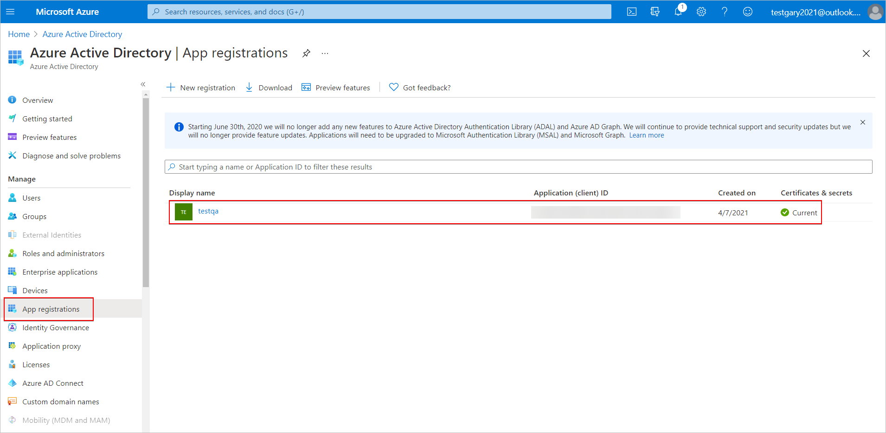Click the Client Credentials link to collect the Secret ID.
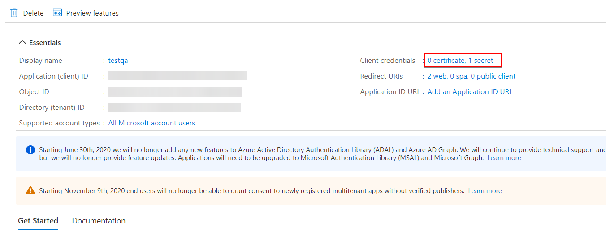Copy the Secret ID to configure ProcessMaker Email Server.

Fill in all required fields in the Edit Email Server window following this example.

Review both the process and system information in ProcessMaker System information menu.

In this way all information is collected carrying out the registration and authentication of an application in Microsoft Azure Portal.
Settings for Microsoft Office 365 accounts:
Use this information to carry out the authentication test described previously:
- Email Engine: OFFICE 365 API SMTP-IMAP
- Server API: smtp.office365.com
- Port: 587
- From Account: Enter an email account and password. e.g. account_name@outlook.com Password: ********
- Sender Email: Enter the sender email address in which the notification is sent. e.g. account_name@outlook.com
- Sender Name: Enter a name for the sent test. e.g. Test
- Send a test email:

- Mail to: account_name@outlook.com
- Set as default configuration: Check if you want this default setting.
Additional Configuration Resources
Review the following resources for more information:
- Quickstart: Register an app with the Microsoft identity platform: https://docs.microsoft.com/en-us/azure/active-directory/develop/quickstart-register-app
- Quickstart: Configure a client application to access a web API - Microsoft identity platform: https://docs.microsoft.com/en-us/azure/active-directory/develop/quickstart-configure-app-access-web-apis
Testing the Email Configuration
This section discusses how to test Email configurations, as accessed from Email Engine setting of the Edit Email Server window.
Note: Test button is not available for GMAIL API (PHPMailer) and GMAIL API (PHPMailer) email engine.
After filling Email server fields, follow this steps:
-
Click on the Test button to test the email configuration.
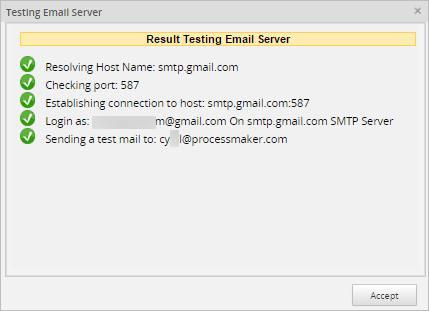 -
If there is an error when configuring the server, a red X appears as seen in the image below. Go back to settings and when configured, test again.
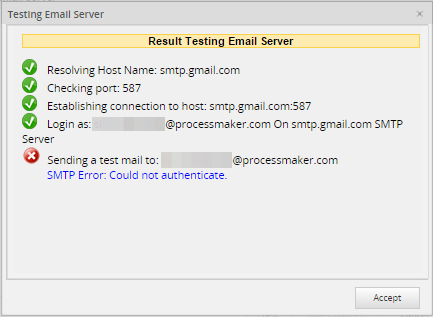 -
If the Send a test mail option was selected, a test email from ProcessMaker administrator arrives:
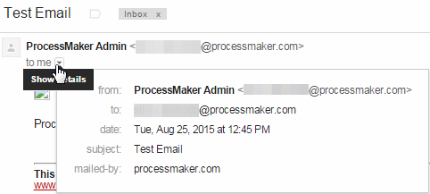 -
After all the tests pass, click on the Save Changes button to save the email configuration.
Note: Take into account that when using one email account in the Sender Account field, but a different Sender Email account, the from account sent in the emails will always be the account set in the Sender Account field. The account set in the Sender Email field will be sent as the reply-to.
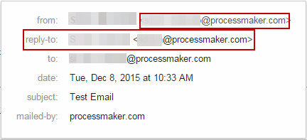
Settings of Common Email Providers with the Engine SMTP (PHPMailer)
The following sections explain how to set the email servers with the SMTP (PHPMailer) engine for common email providers ProcessMaker supports:
Email Configuration for Gmail
This section documents email configuration settings for Gmail:
- Email Engine: SMTP (PHPMailer)
- Server: smtp.gmail.com
- Port: 587
- Require authentication:
- Sender Account: account_name@gmail.com or account_name@company_name.com
- Password: account_password
- Use Secure Connection: TLS
To save a copy of outgoing emails in the Sent folder of a Gmail account, IMAP needs to be enabled:
Sign in to your Gmail account.
Click the gear icon located in the top right of the sceen.
-
Select Settings.

Click Forwarding and POP/IMAP.
Select Enable IMAP.
Click Save Changes.
Gmail 2-Step Verification
If using a 2-Step Verification Gmail account, it is necessary to use a Google Application Password to make a connection with ProcessMaker.
To do this, follow the next steps:
-
Log on to your Gmail account and go to your App passwords page.
-
Click Select app and choose the Other option.
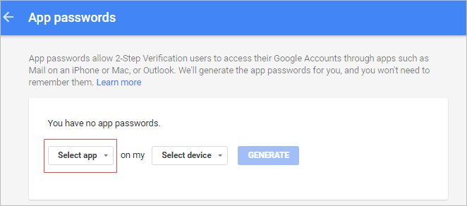 -
Write ProcessMaker in the text field and click the Generate button.
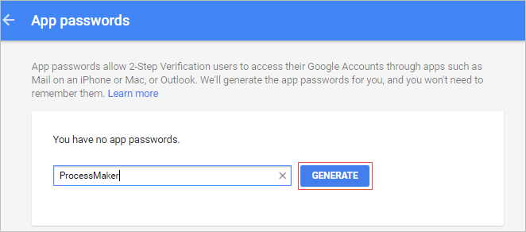 -
An App password (the 16 character code in the yellow bar) will be generated. Copy the code and click Done to exit. Take into consideration that each app password is only used once, and once that app password is generated cannot be used again.

The new app password will be listed and ready to use.
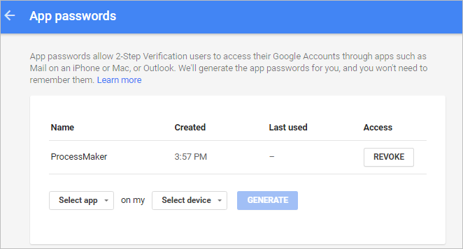 -
Go to the Email Server Configuration in ProcessMaker, and instead of your normal password place the 16-character code in the Password field.
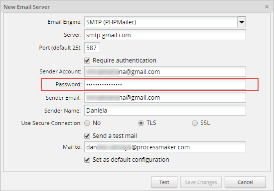 -
After filling in the email settings, click on the Test button to test the email configuration.
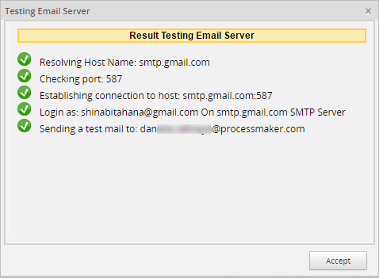
Turn on Access for less secure apps in Gmail
Warning: G Suite began to remove Enforce access to less secure apps (LSA) for all users on October 30, 2019. Please refer to the ProcessMaker's Email Configuration for Gmail using SMTP Relay for functionality that might meet your needs.
Gmail does not allow emails to be sent from apps that seem to be less secure. The Access for less secure apps option needs to be enabled in the Gmail account in the Sender Account field if sending the test email fails with the error message: SMTP Error: Could not authenticate.
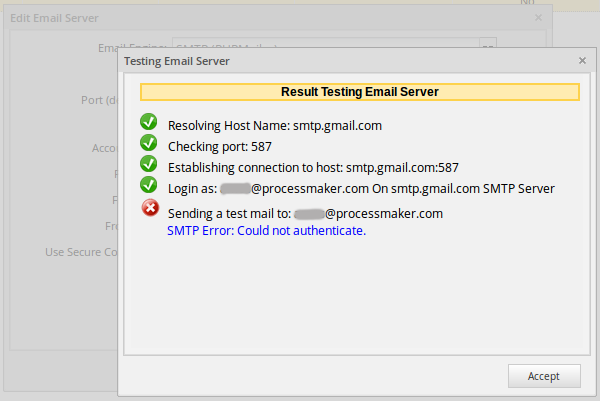
Google will send a warning email to your Gmail account with the following text:
Google just blocked someone from signing into your Google Account
xxxx@gmail.com from an app that may put your account at risk.
For example:

Click on the "allowing access to less secure apps" link at the bottom of the email. It will open a new tab or window to allow access from less secure apps. In the Access for less secure apps option, select the Turn on option.
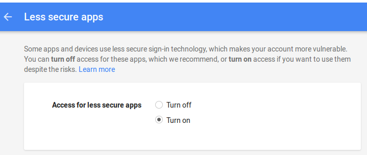Now it is possible for ProcessMaker to send out emails from your Gmail account.
Email Configuration for Gmail using SMTP Relay
This section documents email configuration settings for Gmail using SMTP relay:
- Email Engine: SMTP (PHPMailer)
- Server: smtp-relay.gmail.com
- Port: 587
- Sender Account: account_name@company_name.com
- Use Secure Connection: TLS
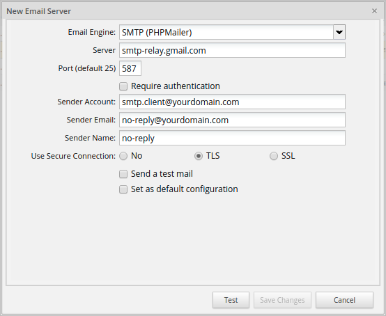
To run the email server correctly, you must enable the SMTP relay.
Enable SMTP Relay
If your organization uses an SMTP service through Google, you can configure the SMTP relay service to route outgoing mail. Take into account that you must have a G Suite account. To do this, follow the next steps:
Log on as an administrator.
Click
 at the top right of the screen.
at the top right of the screen.Click More.
Click Admin.
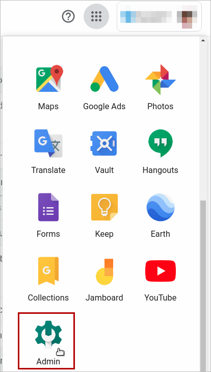The Admin Console screen displays. Click Apps.

The Apps screen displays. Click G Suite.
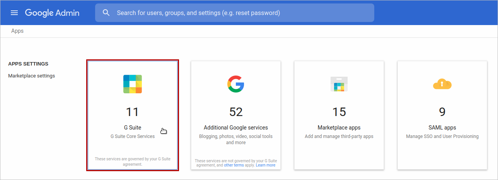The G Suite screen displays. Check the Gmail option listed.

The Settings for Gmail screen displays. Scroll to the bottom of the page and click Advanced settings.
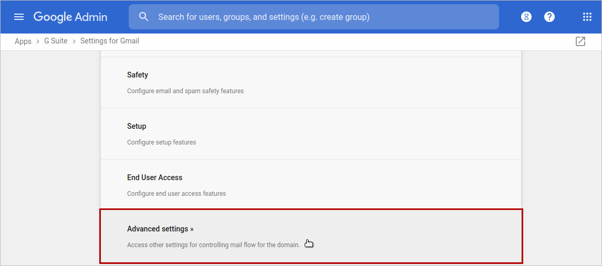The General Settings tab displays. Make sure to select the top-level organization on the left.
Scroll to the Routing section, hover over the SMTP relay service setting, and then do one of the following:
- If an SMTP relay is not configured, click Configure.
- If the setting is already configured, click Edit or Add Another.
In this case click Add Another.
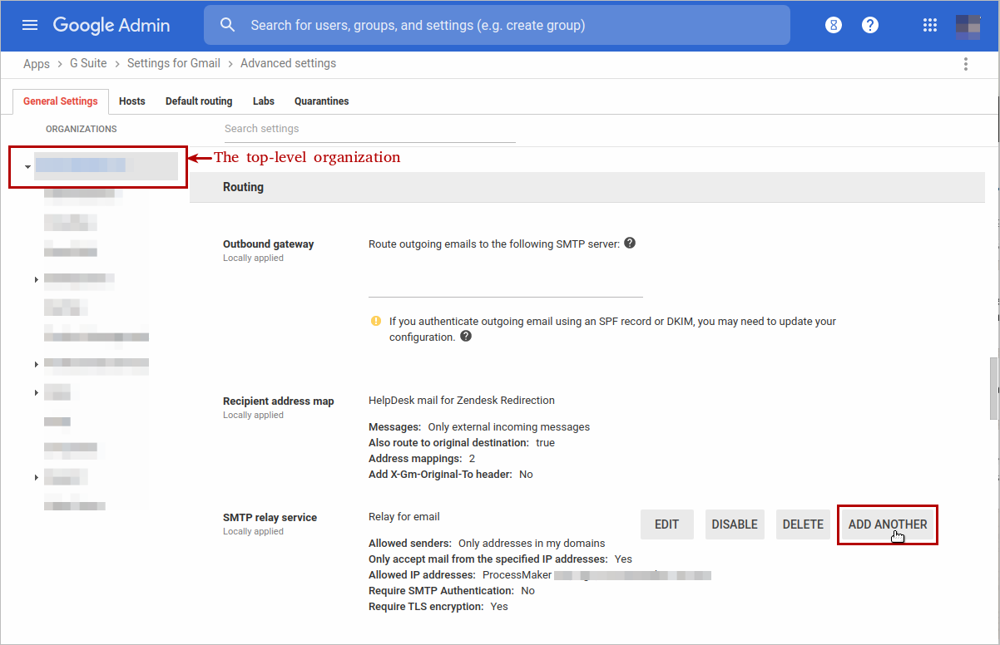The Add setting window displays. In the SMTP relay service section, enter a unique description.
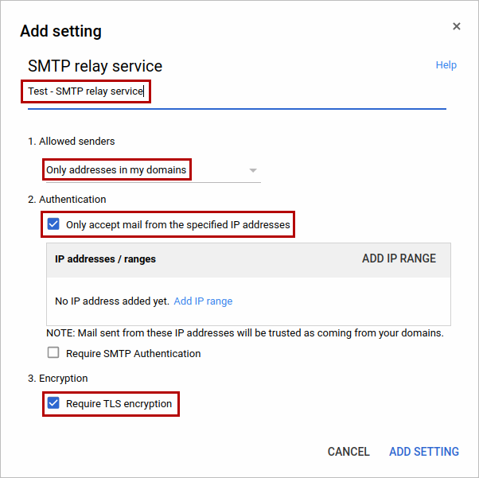In the Allowed senders section, select the users who are allowed to send messages through the SMTP relay service. In this case ProcessMaker recommends Only addresses in my domains. It means that the sender does not have to be a recognized G Suite account, but must be in one of your registered domains. This can be useful when you have third-party or custom applications that need to send messages. If you chose to only accept messages from specified IP addresses in my domains, the IP addresses / ranges section becomes enabled.
In the Authentication section, check Only accept mail from the specified IP addresses. It means that the system only accepts mail sent from these IP addresses as being sent from your domain. After checking Only accept mail from the specified IP addresses, add IP addresses by following these steps:
a. In the IP addresses / ranges section, click ADD IP RANGE or Add IP range.
b. A new window displays. In the Description field, enter a description for the IP address or range.
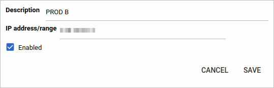
c. In the IP address/range field, enter the IP address or range. Use the Classless Inter-Domain Routing (CIDR) format to enter an IP range; for example,
123.123.123.123. Use your own public IP address. The maximum number of IP addresses that you can specify in the range is65,536. It is recommended that you keep the allowed IP range as narrow as possible for security reasons. You can also use IPv6 address formats to specify an IP address; for example,1050::5:600:300c:326b.d. Check the Enabled box to enable this IP address or range.
e. Click SAVE. The new IP range is listed in the IP addresses / ranges section.
In the Encryption section, check the Require TLS encryption box that requires the communication between your server and Google’s server to be TLS encrypted, including the message contents.
Note: If your email server does not support TLS, do not check this box. If you check this box, Google will reject messages that are not encrypted.
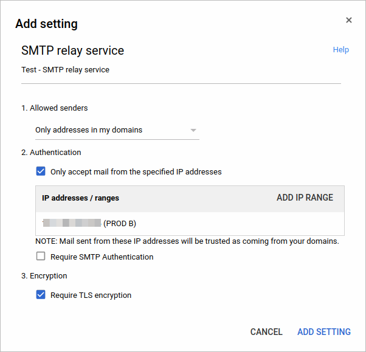Click ADD SETTING.
The General Settings tab lists the new SMTP relay service at the bottom. Click SAVE. It can take up to an hour for changes to propagate to user accounts.
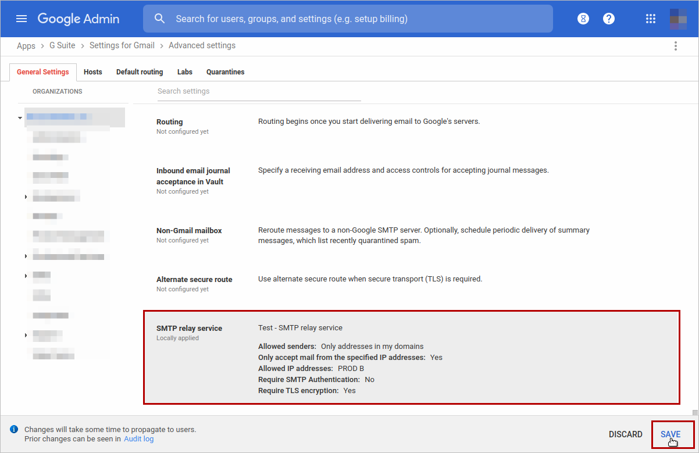
To know more about the SMTP relay setting, see SMTP relay.
Email Configuration for Yahoo!
This section documents email configuration settings for Yahoo!:
- Email Engine: SMTP (PHPMailer)
- Server: smtp.mail.yahoo.com
- Port: 587
- Require authentication:
- Sender Account: account_name@yahoo.com
- Password: account_password
- Use Secure Connection: TLS
Note: Yahoo limits accounts to 500 emails per day and emails can only be addressed to a maximum of 100 recipients.
Email Configuration for Hotmail
This section documents email configuration settings for Hotmail:
- Email Engine: SMTP (PHPMailer)
- Server: smtp.live.com
- Port: 25 or 587
- Require authentication:
- Sender Account: account_name@hotmail.com
- Password: account_password
- Use Secure Connection: TLS
Note: Hotmail accounts are limited to a maximum of 300 messages per day and up to 100 recipients per message. However, you can increase your Hotmail message sending limits.
Email Configuration for Outlook
This section documents email configuration settings for Outlook:
Settings for Outlook accounts:
- Email Engine: SMTP (PHPMailer)
- Server: smtp-mail.outlook.com
- Port: 25 or 587
- Require authentication:
- Sender Account: account_name@hotmail.com
- Password: account_password
- Use Secure Connection: TLS
Checking the Email Configuration
To make sure that ProcessMaker is properly configured to connect to an email server, go to ADMIN > Settings > Email Servers and send a test email as shown in the sections above. If ProcessMaker is unable to connect to the email server, check the address, port number and firewall.
Check the Address
If the test email fails, then first verify that the ProcessMaker server can connect to the email server. Go to the command line of the ProcessMaker server and issue a ping. (Use CTRL+C to stop the pings.)
For example:
Note: Some systems may block the ICMP packets used by ping, so the email server may be operating even if the ping fails.
Check the Ports
Then, check which ports are being used by the email server with a tool such as Nmap, which shows which ports are being used.
For example, to check which ports are used by smtp.mail.yahoo.com:
In this case, smtp.mail.yahoo.com is using port 25 for unsecured email and port 465 for email with a secure connection.
To check which ports are being used by the local machine, use netstat -tanp in Linux/UNIX or netstat -anb in Windows.
For example, to figure out which port is being used by the EXIM mail server on the local machine:
Check the Firewall
If the test email fails, then make sure that no firewall is blocking the port used by the email server.
Linux/UNIX:
To see which ports are open, use the netstat command as shown above. To check the status of iptables, use the command: iptables -L -n -v
For example, the following output indicates that iptables is not configured, so no traffic should be blocked:
Windows:
To see which ports are open, use the netstat command as shown above.
To check the status of Windows firewall:
- In Windows XP/2003/Vista, use the command: netsh firewall show state
- In Windows 7/2008, use the command: netsh advfirewall firewall
Note: The command is not available in Windows 7, check this response in this forum to learn about a way to view the ports.
Sending Emails from Different Server and User Accounts
By default, all emails are sent out by the email server and user account configured in ADMIN > Settings > Email. In some processes, however, it may be appropriate to send emails from a different email server and/or user account. The config parameter has been added to the PMFSendMessage() function, in order to allow emails to be sent out with a different email server and/or user account.
To create a trigger that sends out an email from a custom email server and/or user account follow this steps:
Go to DESIGNER and open a process for editing.
- Go to the Triggers tab and click on New.
-
Select ProcessMaker Functions and click on PMFSendMessage() in the list:
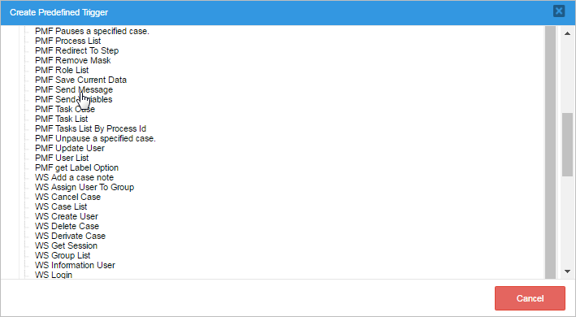 -
See the documentation for this function. The parameter to configure an alternative email server is the last parameter of the function.
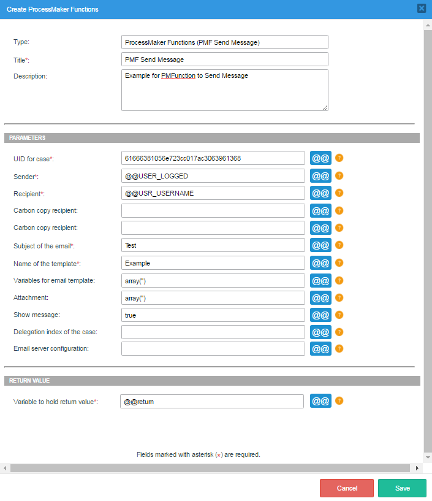 -
The function definition of PMFSendMessage():
-
To use an alternative email server and/or user account, the config parameter of
PMFSendMessage()should be set either a string with the UID of the email server or account settings, or an associative array with the following values as the keys:- MESS_ENGINE: Select the email server that will be used to send out emails. Possible values include:
- "PHPMAILER": This option sends email using the PHPMailer program, which is recommended if using an external email service (such as Yahoo!, gmail, hotmail, etc.) or if the server running ProcessMaker is not configured to use a Mail Transfer Agent (such as SendMail, Postfix, exim, etc.).
- "MAIL": This option uses PHP's mail() function to send the email, which means that the server running ProcessMaker should have a Mail Transfer Agent (such as SendMail, Postfix, Exim, etc.) and PHP should be configured to use it. If this option is used, then the MESS_SERVER, MESS_PORT and SMTPSecure parameters are ignored.
- MESS_SERVER: The IP address or domain name of the email server. For example, "smtp.live.com" or "smtp.example.com".
- MESS_PORT: The port number used by the email server. Generally port 25 is used, or alternatively port 587. If connecting to the email server with an SSL or TLS connection, generally port 465 is used.
- MESS_ACCOUNT: The name that will be used in the From field of the message. It can be an email address, such as "johndoe@example.com", or a name, such as "John Doe" or "Acme Inc.". This value depends upon the email provider. For example, the Gmail email server always uses an email address in this field. If this field is an email address, the MESS_FROM_MAIL parameter is ignored, but if it is a name, MESS_FROM_MAIL should be set to a valid email account.
- MESS_FROM_MAIL: If MESS_ACCOUNT is set to a name, set this value to the email address from which the notification will be sent, such as: "johndoe@example.com".
- MESS_RAUTH: Set to 1 if the server requires authentication, meaning that a password is required; otherwise, set it to 0.
- MESS_PASSWORD: The password of the user account.
-
SMTPSecure: Select whether the email requires a secure connection:
- "": Set to an empty string if a secure connection to the email server is not required.
- "ssl": If using Secure Sockets Layer to connect to the email server.
- "tls": If using Transport Layer Security to connect to the email server.
- MESS_ENGINE: Select the email server that will be used to send out emails. Possible values include:
Emailing Members of a Group
In this example, the members of a group named "Employees" will receive emails from a Gmail account that is specified in the associative array $serverConfig, which is passed to the config parameter of PMFSendMessage():
$query = "SELECT "
. "DISTINCT GROUP_USER.USR_UID "
. "FROM GROUPWF "
. "INNER JOIN GROUP_USER ON ("
. " GROUPWF.GRP_ID=GROUP_USER.GRP_ID AND "
. " GROUPWF.GRP_TITLE='{$groupName}' "
. ")";
$result = executeQuery($query);
if (!is_array($result) || count($result) < 1) {
$g = new G();
$g->SendMessageText("Unable to find any users in group '$groupName'.", "WARNING");
} else {
$to = "";
foreach ($result as $record) {
$userInfo = userInfo($record['USR_UID']);
if (empty($to)) {
$to = $userInfo['mail'];
} else {
$to .= ", " . $userInfo['mail'];
}
}
$serverConfig = [
"MESS_ENGINE" => "PHPMAILER",
"MESS_SERVER" => "smtp.gmail.com",
"MESS_PORT" => 465,
"MESS_ACCOUNT" => "manager@company.com",
"MESS_FROM_MAIL" => "",
"MESS_PASSWORD" => "xxxxxx",
"SMTPSecure" => "tls",
"MESS_RAUTH" => 1
];
PMFSendMessage(@@APPLICATION, 'manager@company.com', $to, '', '', 'Expenses for Project', 'projectExpenses.html', [], [], true, 0, $serverConfig);
}